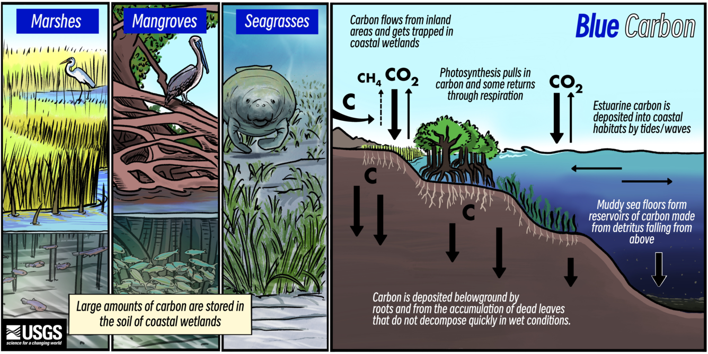
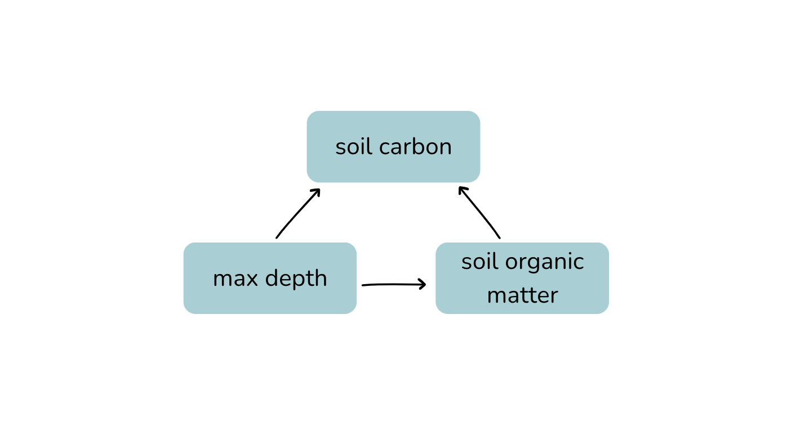

Investigating Blue Carbon Ecosystems with Beta Regression
A brief statistical analysis of soil carbon.
Investigating Blue Carbon Ecosystems with Beta Regression
Research Question
Large amounts of carbon is naturally stored in the world’s oceans and in the soil of coastal wetlands. This is referred to as blue carbon.
Blue carbon is unique due to its ability to store or sequester carbon at a much faster rate than terrestrial ecosystems like forests. This carbon is stored in the soils of these ecosystems – marsh, sea grass, mangrove, and salt marshes. These habitats are of growing interest as greenhouse gases continue to accumulate in the atmosphere. Understanding the biogeochemical processes that make up carbon sequestration is important for advancing blue carbon management as a solution to climate change. (Survey (2024)).

Graphic of blue carbon ecosystems and carbon sequestration. Source: USGS
For this project, I will fit a Beta Regression model to answer the following question:
How does soil organic matter affect carbon in coastal ecosystems?
Soil organic matter consists of organic material deposited in the soil from organisms at various stages of decomposition. It is a key indicator of soil carbon in an ecosystem because soil carbon represents the portion of that organic matter made up of carbon. In other words, soil carbon is directly derived from, and proportional to, the amount of soil organic matter present.
Data Background
This data is from the Smithsonian Environmental Research Center’s Coastal Carbon Network (Center (n.d.)). The CCN collects and standardizes carbon stock and flux data from coastal ecosystems worldwide. They provide access to data sets for researchers and students like me. The dataset itself is originally over 15,000,000 observations and includes data on soil measurements such as depth of soil cores, soil bulk density, organic matter, carbon, and data on habitat and associated vegetation.
Coastal Carbon Network logo
Data Wrangling
In this section I filtered the data for only variables of interest (fraction_carbon, fraction_organic_matter, max_depth, habitat) as well as ensured that fraction_carbon only contained fractional data between 0 and 1. For this dataset, I also filtered to the three most researched habitats for blue carbon: mangrove, seagrass, and marsh.
set.seed(123)# .....Further filter datasets.....# Species data species <- species %>%select('site_id', 'habitat') %>%filter(habitat %in%c("mangrove", "seagrass", "marsh")) %>%drop_na()# Cores data cores <- cores %>%select('site_id', 'max_depth') %>%drop_na()# Depth series data depth_series <- depth_series %>%select('site_id','fraction_organic_matter', 'fraction_carbon') %>%drop_na()#.....Join datasets.....blue_carbon <- species %>%full_join(depth_series, by =c('site_id')) %>%full_join(cores, by =c('site_id')) #.....Random sample....blue_carbon <-sample_n(blue_carbon, size =100000)#.....Remove Negative values from Fraction Carbon.....# Ensure `fraction_carbon` ranges between 0 and 1 for analysis.range(blue_carbon$fraction_carbon)sum(blue_carbon$fraction_carbon <0, na.rm =TRUE) # 17 negative values. # Replace negative numbers with NAsblue_carbon$fraction_carbon[blue_carbon$fraction_carbon <0] <-NA# Check range to ensure negative values were range(blue_carbon$fraction_carbon)# Remove Nas from entire datasetblue_carbon <-na.omit(blue_carbon)#..... Ensure R keeps data within bounds....blue_carbon$fraction_carbon[blue_carbon$fraction_carbon ==1] <- .999blue_carbon$fraction_carbon[blue_carbon$fraction_carbon ==0] <- .0001# Clear up environmentrm(list =c("cores", "depth_series", "sites", "species"))
Data Exploration
In order to understand what analysis needs to be done, some preliminary data exploration is useful. I am particularly interested in the spread of data points for fraction_carbon.
Code
frac_car_plot <- blue_carbon %>%ggplot(aes(fraction_carbon)) +geom_histogram(fill ="#9fd0d6") +labs(x ="Fraction carbon (dimensionless)", y ="Frequency", title ="Distribution of Fraction Carbon") +theme_classic() +theme(plot.title =element_text(hjust =0.5)) # Center title frac_car_plot
Fig 1. Distribution of Fraction Carbon
As you can see in Fig 1., fraction carbon is left skewed signifying that it does not follow a normal distribution. This is due to fraction carbon being bounded between 0 and 1 because it is a fraction.
Code
# Define palettemy_palette <-c("#9FD0D6", "#F2A176", "#985D73")som_car_habitat_plt <- blue_carbon %>%ggplot(aes(x = fraction_organic_matter, y = fraction_carbon, color = habitat)) +geom_point(alpha =0.2) +geom_smooth(aes(group = habitat), method ="lm", se =FALSE) +# Add best fit lines scale_color_manual(values = my_palette) +theme_classic() +labs(x ="Soil Organic Matter (dimensionless)", y ="Fraction carbon (dimensionless)", title ="Relationship between soil organic matter and fraction carbon")som_car_habitat_plt
Fig 2. Relationship between soil organic matter and fraction carbon
As you can see in Fig 2., soil organic matter follows a generally linear pattern with fraction carbon. There is some notable variation between habitats, especially between seagrass compared to marsh and mangrove, but the overall shape of the data is similar across most habitats. Despite these differences, all three habitats show broadly comparable patterns in their relationship between soil organic matter and fraction carbon based on this graph.
Statistical Model: Beta Regression
Since my response variable, fraction_carbon is a fraction between 0 and 1, and is not normally distributed around the mean, I will use Beta regression (Cribari–Neto and Zeileis (2010)). Beta regression models the mean of a proportion or fraction as a function of predictors. My predictors in this study are the following:
fraction_organic_matter: Mass of organic matter relative to sample dry mass (dimensionless)
max_ depth: Maximum depth of a sampling increment (centimeters)
Why include max_depth in the model? Deeper soils might have more organic matter accumulation and fraction carbon can change with depth (e.g., shallower layers of soil may have higher carbon than deeper layers).
Why exclude habitat from the model? I am interested in the overall relationship between soil organic matter and fraction carbon, regardless of habitat. If I were to represent the causal relationship of habitat and fraction carbon I would represent it as habitat → fraction_organic_matter → fraction_carbon. Because habitat influences organic matter, it inhibits the total effect of organic matter on fraction carbon, therefore excluding it allows me to model the full effect of the predictor on the response.
I represented these causal relationships with a directed acylcic graph (DAG):

DAG
Hypothesis
Question: How does soil organic matter affect carbon?
H₀ (null hypothesis): Soil organic matter has no effect on fraction carbon in the soil.
H₁ (alternative hypothesis): Higher soil organic matter is associated with higher fraction carbon.
carbon is the fraction of carbon, constrained between 0 and 1.
\(\mu_i\) is the expected value of carbon.
\(\phi\) is the precision parameter of the beta distribution. This controls the variance.
coefficients: \(\beta_0\) is the intercept; \(\beta_1\) and \(\beta_2\) are coefficients for the predictors fraction organic matter and max depth
Fit Model to Simulated Data
In order to determine if a Beta regression model is fit for this data, I will simulate data and perform an analysis on the simulated data. This step is also helpful to see how well you understand the model you plan to use. This includes the following steps:
define sample size
choose parameters for \(\beta\)
define range for predictors
define linear equation and logit function
generate response
fit model to simulated data
see if parameters were recovered
Code
# set seed for reproducibilityset.seed(123)# 1. Define sample sizen <-10000# Large enough sample size # 2. Choose parameters beta_0 <-0.5# Intercept (fraction carbon)beta_1 <-0.8# Effect of fraction organic matterbeta_2 <--0.01# Effect of max_depthphi <-0.9# Precision parameter # 3. Define predictor ranges (x's)# Runif(n=sample size, min, max)fraction_organic_matter <-runif(n, 0.05, 0.9)max_depth <-runif(n, 0, 30)# 3. Linear predictor and Logit response# Set logit_mu logit_mu <- beta_0 + beta_1 * fraction_organic_matter + beta_2 * max_depth # Set transformation # Inverse logit mu <-1/ (1+exp(-logit_mu)) # Mu = mean of beta distribution# 4. Generate response with rbeta()shape1 <- mu * phishape2 <- (1- mu) * phifraction_carbon <-rbeta(n, shape1, shape2)# R computer error: ensure that fraction carbon stays between 0 and 1fraction_carbon[fraction_carbon ==1] <- .999fraction_carbon[fraction_carbon ==0] <- .0001# 5. Create dataframe for simulated datasim_blue_carbon <-data.frame(fraction_carbon, fraction_organic_matter, max_depth)# 6. Fit model betareg_sim_mdl <-glmmTMB(fraction_carbon ~ fraction_organic_matter + max_depth, data = sim_blue_carbon, family =beta_family())# Summarize modelsummary(betareg_sim_mdl)
Table 1. Model Assessment
Coefficient
Simulation Estimate
Actual Parameter
Intercept
0.4789468
0.50
Fraction Organic Matter
0.8298071
0.80
Max Depth
-0.0097642
-0.01
The model seems to recover parameters well. This is good evidence that beta regression is the model for this data.
Fit Model to Real Data
Now, I will fit a beta regression model to real life data from the Smithsonian’s Coastal Carbon Network. I will use the glmmTMB package and specify the family as beta_family for a beta regression.
Code
# .....Fit beta regression model..... betareg_mdl <-glmmTMB(fraction_carbon ~ fraction_organic_matter + max_depth, data = blue_carbon, family =beta_family())
The beta regression analysis shows a low baseline of fraction carbon in coastal carbon ecosystems when there is no soil organic matter. Soil organic shows a strong, significant positive effect on fraction carbon. As for max depth, there is a very small negative effect on fraction carbon, however it is not significant enough in this model to definitively say deeper soils have less carbon. All of these effects are transformed in logit space.
Effect of fraction organic matter on fraction carbon → significant
Effect of max depth on fraction carbon → not significant
Reject null hypothesis that soil organic matter has no effect on fraction carbon in the soil.
Generate Predictions
In this section I will generate predictions to visualize the predicted effect of soil organic matter on fraction carbon. This step is important to visualize the effect of the predictor on the response and interpret their relationship with predicted data. This includes the following steps:
Create prediction grid/data frame where fraction_organic_matter is allowed to vary based on a specified sequence while max_depth is held constant (with its mean).
Use my Beta regression model fitted to real-life data (betareg_mdl) to generate predictions for fraction_carbon. This produces predicted beta-regression means. Ensure this dataframe is in the response space so that it returns values between 0 and 1.
Why am I holding max_depth constant? I want to show how fraction_carbon changes with one predictor (fraction_organic_matter). This isolates the effect of organic matter on carbon. Additionally, from the results of my beta regression model, max depth did not have a significant effect on fraction carbon, therefore averaging the value will not impact the predictive power of the model.
Code
# .....Create prediction grid.....pred_grid <-expand_grid(fraction_organic_matter =seq(from =0, to =1, by =0.001)) %>%mutate(max_depth =mean(blue_carbon$max_depth, na.rm =TRUE)) # Hold max depth constant # ......Generate predictions.....betareg_grid <- pred_grid %>%# Pull from pred_gridmutate(predictions =predict(object = betareg_mdl, # Predict based on beta reg modelnewdata = pred_grid, # Use expand grid datatype ="response")) # Ensure predictions are in response space
Calculate Confidence Intervals
In this section I will calculate the degree of certainty my predictions have using confidence intervals. A confidence interval is a range we are confident contains the beta’s. I will do this through boot strapping. Bootstrapping is useful here because the glmmTMB package does not calculate confidence intervals for your model. This includes the following steps:
Resample blue_carbon dataset 1000 times with replacement
Refit beta regression model on each bootstrap sample
Make a predictions column from the pred_grid made previously
Compute the 2.5th percentile (lower CI) and the 97.5th percentile (upper CI)
Code
boot <-map_dfr(1:1000, \(i) {# Boot strap sample boot_sample <-slice_sample(blue_carbon, n =1000, replace =TRUE) # Replace the bootstrap # Fit model boot_mdl <-glmmTMB(fraction_carbon ~ fraction_organic_matter + max_depth, #family =beta_family(link ="logit"), data = boot_sample)# Add predictions pred_grid %>%mutate(predictions =predict(boot_mdl, newdata = pred_grid, type ="response"),boot = i)})# Build confidence interval boot_ci <- boot %>%group_by(fraction_organic_matter, max_depth) %>%# Group by predictors summarise(ci_lwr =quantile(predictions, 0.025), # Lower CIci_upr =quantile(predictions, 0.975) # Upper CI )
Visualize Predictions
Code
# .....Plot predictions.....predict_plot <-ggplot() +# Predicted linegeom_line(data = betareg_grid, aes(x = fraction_organic_matter, y = predictions), color ="#345084FF", size =1) +# Confidence Interval geom_ribbon(data = boot_ci, aes(x = fraction_organic_matter, ymin = ci_lwr, ymax = ci_upr), fill ="#9FD0D6", alpha =0.2) +labs(x ="Fraction Organic Matter (dimensionless)", y ="Fraction Carbon (dimensionless)", title ="Predicted Fraction Carbon") +theme_bw() +theme(plot.title =element_text(hjust =0.4)) # Center title predict_plot_data <-ggplot() +# Predicted linegeom_line(data = betareg_grid, aes(x = fraction_organic_matter, y = predictions), color ="#345084FF", size =1) +# Confidence Interval geom_ribbon(data = boot_ci, aes(x = fraction_organic_matter, ymin = ci_lwr, ymax = ci_upr), fill ="#9FD0D6", alpha =0.2) +# Original data pointsgeom_point(data = blue_carbon, aes(x = fraction_organic_matter, y = fraction_carbon),alpha =0.5, size =2, color ="#345084FF") +labs(x ="Fraction Organic Matter (dimensionless)", y ="Fraction Carbon (dimensionless)", title ="Predicted Fraction Carbon\nRaw Data") +theme_bw() +theme(plot.title =element_text(hjust =0.4)) # Center title # Plot side-by-sidepredict_plot + predict_plot_data
Fig 3. and Fig 4. Predicted fraction carbon.
The predicted plot above (fig 3.) shows an increase in fraction carbon as organic matter increases. This is consistent with my findings from the beta regression model (p < 2e-16). When looking at the confidence interval, there is more certainty for organic matter proportions between 0.00 and 0.30 fractions. There is less certainty in the relationship as organic matter increases and fraction carbon increase, which is typical for confidence intervals as the level of certainty decreases as the amount of available data decreases. When plotting the raw data onto the predicted model in fig 4., you can see that the data trajectory differs from the predicted line. There can be many reasons for this behavior; my main idea is that the data itself has natural variation, as is common in all environmental datasets. When referencing fig 2., you can see that the “check-mark” shape of the data is due to variation in habitat (i.e., seagrass fraction carbon measurements varied). Since my model did not account for habitat, the predicted model may underfit the data. This natural “noise” in the data does not signify that the model failed, but rather shows that there is real-world variation within this dataset.
Conclusion and Next Steps
Soil organic matter is a known predictor of fraction carbon, as organic matter is the material that directly contributes to fraction carbon. As hypothesized, the results of the beta regression model showed a significant effect of soil organic matter on fraction carbon (p < 2e-16). Max depth’s effect was not significant, which is important to note since it was included in this study based on the assumption that it might confound the relationship between fraction carbon and organic matter. From an ecological standpoint, depth may only have a strong effect at extremes (e.g., very shallow or very deep soils), and small variations may not noticeably influence fraction carbon.
In conclusion, understanding the biogeochemical processes of these unique ecosystems is crucial. In future studies, it would be interesting to isolate the effect of habitat on fraction carbon, or to include the interactive effects of habitat and soil organic matter. This could provide a more detailed understanding of the factors controlling carbon distribution in these systems.